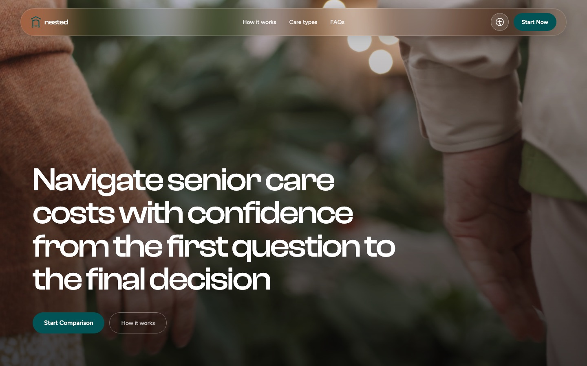
A tool that helps families compare the real cost of in-home care, assisted living, and memory care, so they can make one of life’s biggest decisions with clear numbers.
A website for a Bellevue salon that makes it easy to browse services and book a visit, with a warm, local feel.
A website for an author that gives every book its own page, so readers can explore the full collection and find their next read.

An app for photobooth lovers to find booths nearby, save their favorites, and keep every photo strip in one private collection.
A friendship app that helps women make real friends after college or a move, by connecting them through shared interests and local events.
Scratch Art
Personal Project · Fall 2026
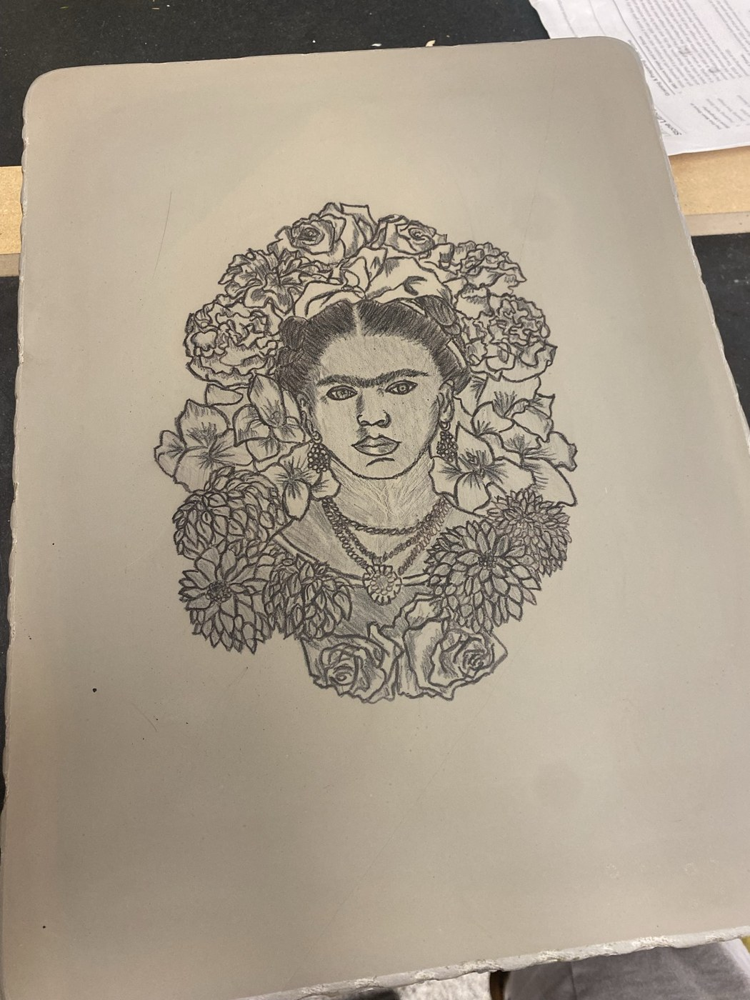
Frida Litho
A lithograph I made for my printmaking class
Paros, Greece
A church I photographed on the island
404 Page
A UFO abduction for lost visitors
Puddle
Click the water to jump in


Designing to delight.
Hi, I’m Amelia. Born, raised, and based in Seattle, WA.
I design and build software that feels simple, intuitive, and delightful. What I love most is tackling complex problems, balancing systems thinking with human needs. I’m drawn to AI tooling and consumer products.
Outside of work I enjoy:
- Skiing
- Screen printing
- Making personalized apps for my friends
- Spending an entire day in an art museum
Open to full-time and freelance work. If you’re building something fun, I’d love to hear about it.
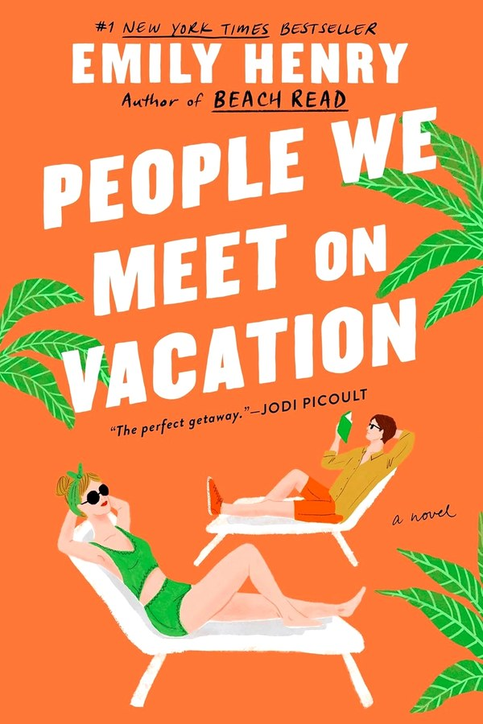
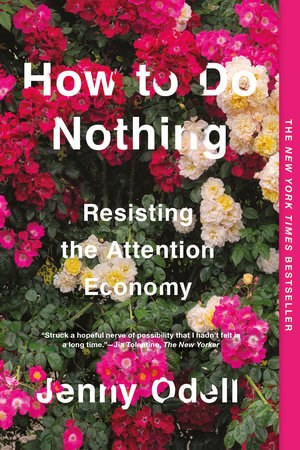
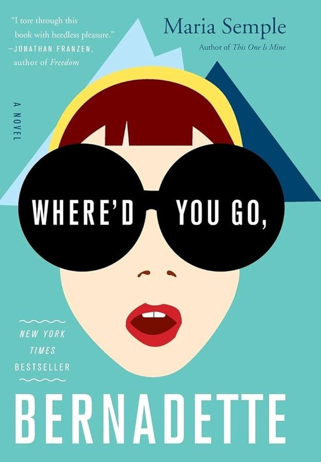
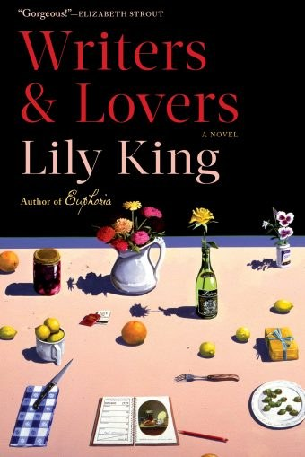
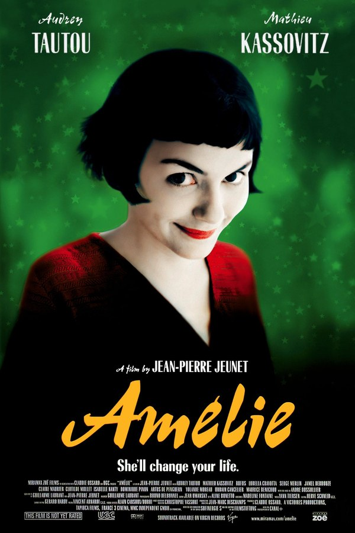
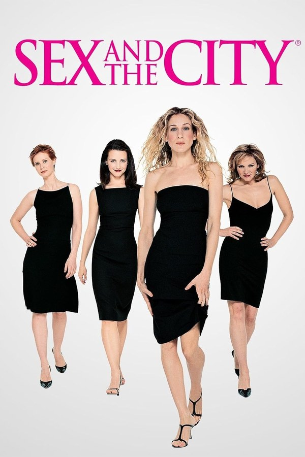
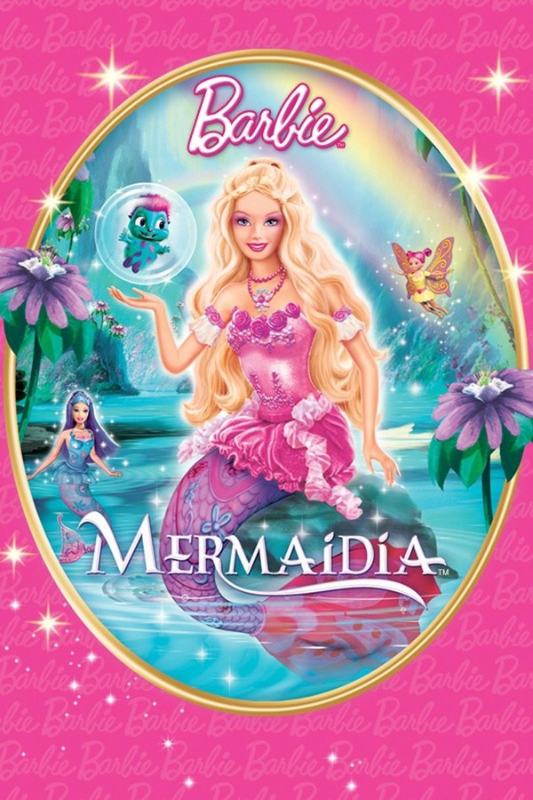
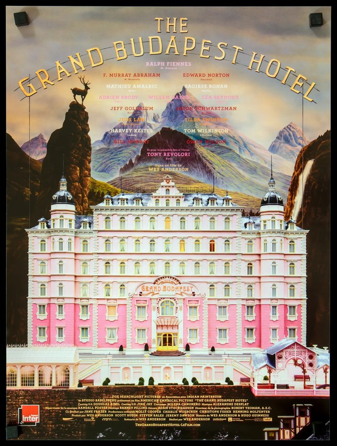
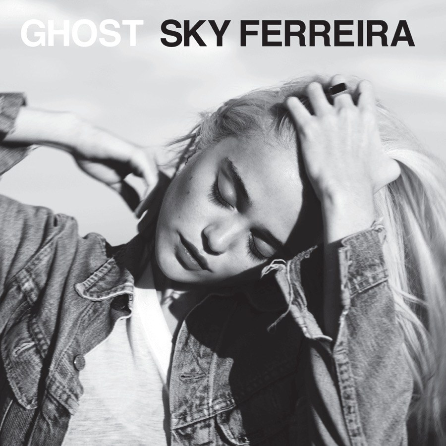
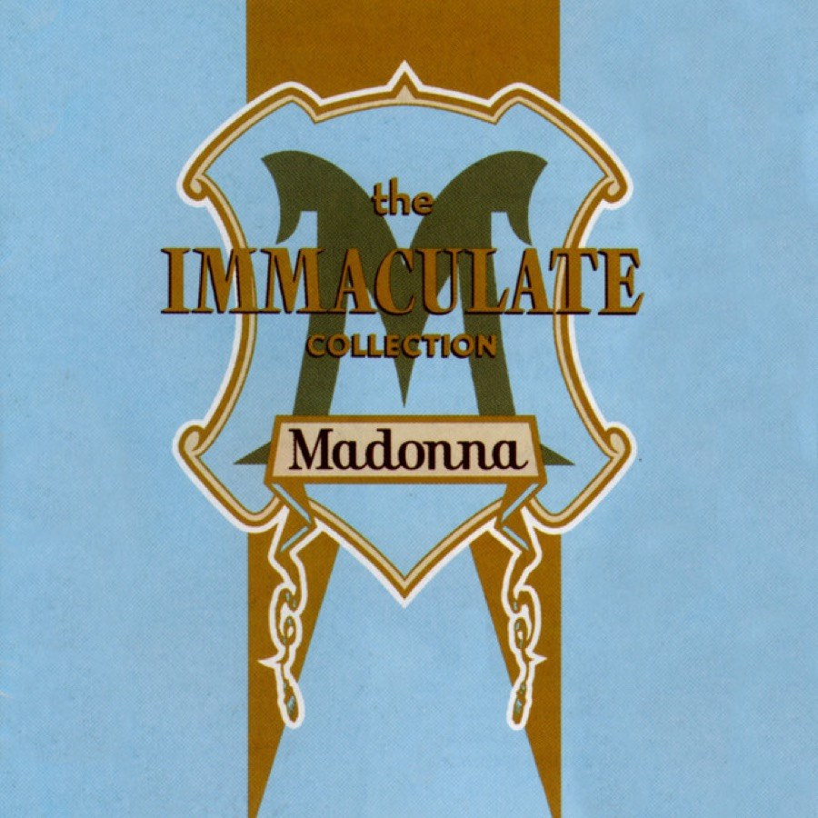
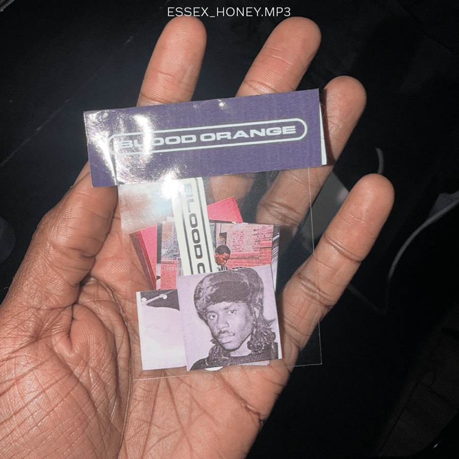
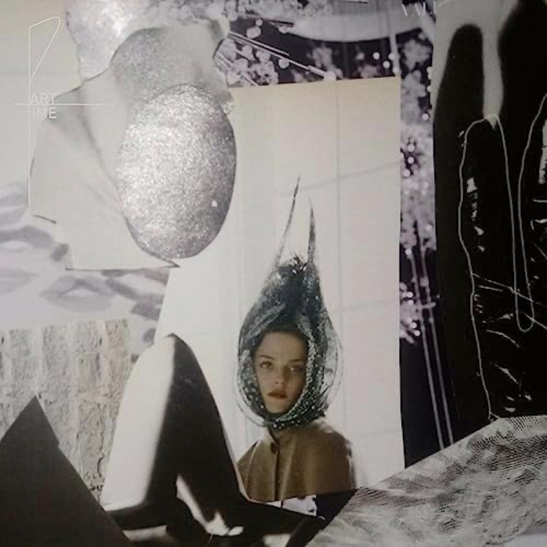
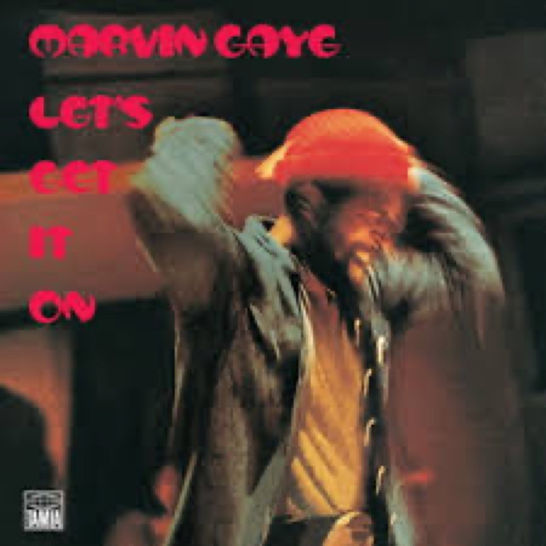